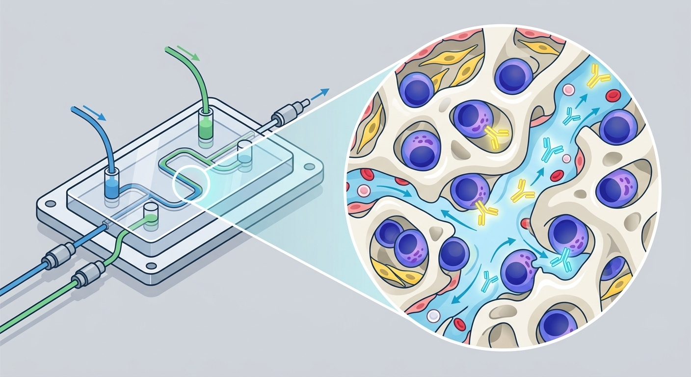

The Lifelong Fortress of Immunity: How a Human Bone-Marrow-on-a-Chip Unlocks the Secrets of Immune Longevity

Imagine a cellular fortress hidden deep within your bones, shielding the veteran soldiers of your immune system for decades. These soldiers, known as long-lived plasma cells or antibody-secreting cells (ASCs), are the reason a single tetanus shot can protect you for half a lifetime, while other vaccines fizzle out in a matter of months. For years, scientists have tried to peer inside this fortress—the human bone marrow—to understand why some immune cells seem to live forever while others perish. But studying the complex, microscopic architecture of living human bone has been nearly impossible, forcing researchers to rely on mice, whose biology frequently fails to translate to ours. Now, a pioneering study published in Science Advances has breached the fortress walls by building a living, breathing human bone-marrow-on-a-chip (hBMOC).
This organ-on-a-chip is not just a static scaffold; it is a dynamic, microvascular metropolis. Developed by an interdisciplinary team of bioengineers and immunologists, the hBMOC model recreates the two distinct neighborhoods—or "subniches"—of the bone marrow: the endosteal niche (nestled near the bone surface) and the perivascular niche (surrounding the blood vessels). By injecting human immune organoid-derived ASCs into this perfusable chip, the researchers watched in real-time as these cells navigated the microscopic channels. They discovered that ASCs do not just wander aimlessly; they actively migrate through the engineered blood vessels, settling down in specific perivascular hotspots rich in survival-promoting chemical signals.
The study revealed a fascinating, choreographed dance. The ASCs exhibited a distinct "stop-and-go" migration pattern, resembling commuters navigating a busy city. This behavior, the researchers found, is tightly regulated by a molecular GPS system known as the CXCR4-CXCL12 signaling pathway. Crucially, the study showed that the endosteal and perivascular niches do not operate in isolation. Instead, they work in harmony: the endosteal niche acts as an anchor that influences ASC survival, movement, and retention, while the perivascular niche provides the metabolic fuel and protection they need to endure. This cooperative ecosystem is what ultimately decides whether an antibody-producing cell survives for fifty years or fades away in fifty days.
For the longevity sector, this platform is a potential goldmine. As we age, our immune systems undergo a decline known as immunosenescence, largely driven by the deterioration of the bone marrow niches that support these vital plasma cells. This is why older adults are more vulnerable to novel pathogens and less responsive to standard immunizations. By providing a high-fidelity, ex vivo human model, the hBMOC platform allows researchers to test therapeutic candidates aimed at rejuvenating these niches. Biotech investors and drug developers now have a translatable screening tool to design vaccines with unparalleled durability and therapies that can restore youthful immune function to the aging population.
However, translating these microfluidic triumphs into clinical realities will not be without hurdles. While the hBMOC is a massive leap forward, it remains a simplified abstraction of the immensely complex human skeleton. Real bone marrow contains a dizzying array of cell types, including fat cells that accumulate with age, which were not fully represented in this model. Furthermore, an ex vivo chip cannot fully replicate the systemic endocrine and nervous system inputs that influence bone marrow biology in a living patient. Scaling this delicate technology for high-throughput drug screening will also require overcoming significant manufacturing and standardization challenges. Before biotech companies can rely solely on this "bone-on-a-chip" to predict clinical trial outcomes, further validation is needed to prove that these synthetic microenvironments truly mirror the decade-long survival dynamics of human physiology.
Sources & Citations:
Primary Source: Ex vivo bone marrow subniches influence the fate of human antibody-secreting cells. (Science advances)
- Primary Paper: "Ex vivo bone marrow subniches influence the fate of human antibody-secreting cells." Science Advances, 2024. https://doi.org/10.1126/sciadv.adz3976